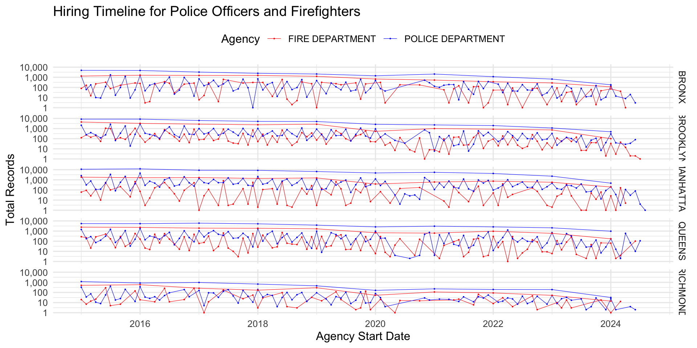
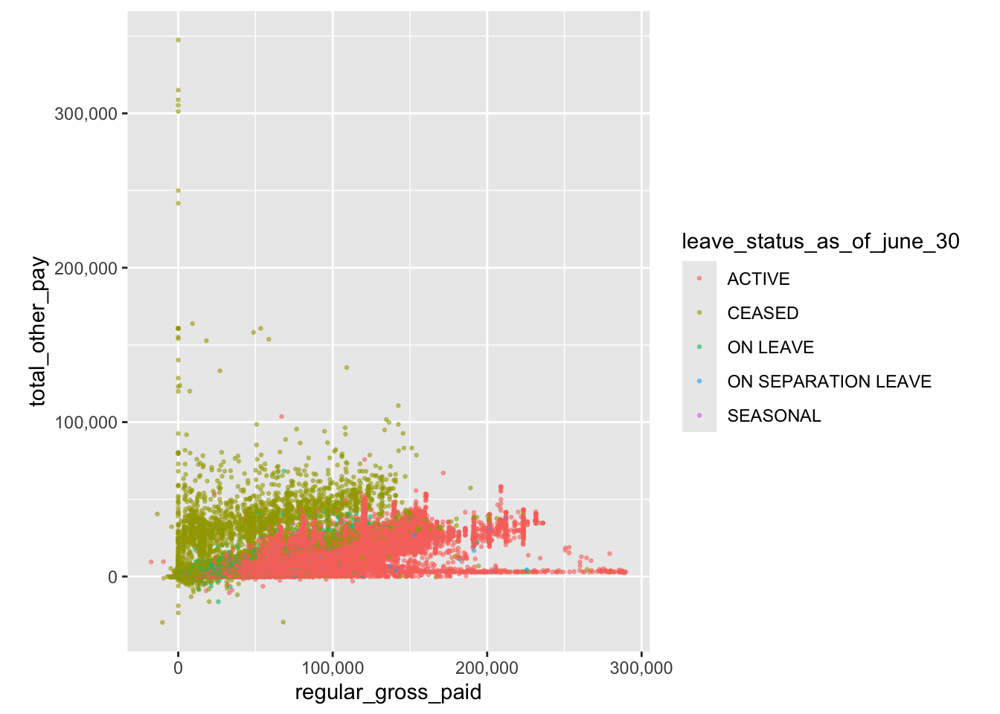

Code
# Read the data RDS
payroll_data_fire_police <- readRDS("data_source/payroll_data_fire_police.rds")Possible 10 Charts based on Problem Set1 hitogram / facets (ps1) boxplot jitter (ps1) with ridgeline (ps1) density lines bar chart lump facet scattter plot Density plot geom_point with facet 9x9 grid (ps2 california) Cleveland dot plot ggparcords parcoords likert mosaic alluvium 11
# Read the data RDS
payroll_data_fire_police <- readRDS("data_source/payroll_data_fire_police.rds")head(payroll_data_fire_police,5) fiscal_year payroll_number agency_name last_name first_name mid_init
1 2020 56 POLICE DEPARTMENT MORALES JOSE
2 2020 56 POLICE DEPARTMENT BOYNE DANIEL G
3 2020 56 POLICE DEPARTMENT MURTHA KEVIN
4 2020 56 POLICE DEPARTMENT MASTRANDE JAMES J
5 2020 56 POLICE DEPARTMENT AROCA ALMA P
agency_start_date work_location_borough title_description
1 1998-12-20 MANHATTAN SUPERVISOR OF SCHOOL SECURITY
2 2016-04-25 MANHATTAN STATIONARY ENGINEER
3 1995-04-30 MANHATTAN LIEUTENANT D/A SPECIAL ASSIGNMENT
4 2013-12-16 MANHATTAN STATIONARY ENGINEER
5 2012-07-11 MANHATTAN POLICE OFFICER
leave_status_as_of_june_30 base_salary pay_basis regular_hours
1 CEASED 57813.0 per Annum 0.00
2 ACTIVE 508.8 per Day 2080.00
3 CEASED 141196.0 per Annum 665.18
4 ACTIVE 508.8 per Day 2080.00
5 CEASED 85292.0 per Annum 22.87
regular_gross_paid ot_hours total_ot_paid total_other_pay
1 0.00 0.00 0.0 650000.00
2 140146.17 1125.25 117728.1 40696.41
3 48008.86 2451.57 162000.5 78132.88
4 140146.17 1007.00 103227.0 27980.42
5 227914.67 0.00 0.0 30289.83colnames(payroll_data_fire_police) [1] "fiscal_year" "payroll_number"
[3] "agency_name" "last_name"
[5] "first_name" "mid_init"
[7] "agency_start_date" "work_location_borough"
[9] "title_description" "leave_status_as_of_june_30"
[11] "base_salary" "pay_basis"
[13] "regular_hours" "regular_gross_paid"
[15] "ot_hours" "total_ot_paid"
[17] "total_other_pay" payroll_data_fire_police |>
mutate(agency_start_date_year = lubridate::year(agency_start_date)) |>
filter(agency_start_date_year > 2014) |>
# Create the bar chart
ggplot(aes(x = agency_start_date_year, fill = agency_name)) +
geom_bar() +
labs(
title = "Count of Records by Agency Start Year",
x = "Agency Start Year",
y = "Number of Records",
fill = "Agency Name"
) +
theme_minimal() +
theme(
axis.text.x = element_text(angle = 45, hjust = 1),
plot.title = element_text(hjust = 0.5)
)payroll_data_fire_police |>
group_by(agency_name, work_location_borough) |>
summarise(
Total_records = n()
)`summarise()` has grouped output by 'agency_name'. You can override using the
`.groups` argument.# A tibble: 10 × 3
# Groups: agency_name [2]
agency_name work_location_borough Total_records
<chr> <chr> <int>
1 FIRE DEPARTMENT BRONX 29662
2 FIRE DEPARTMENT BROOKLYN 73830
3 FIRE DEPARTMENT MANHATTAN 35750
4 FIRE DEPARTMENT QUEENS 43557
5 FIRE DEPARTMENT RICHMOND 9839
6 POLICE DEPARTMENT BRONX 72253
7 POLICE DEPARTMENT BROOKLYN 134890
8 POLICE DEPARTMENT MANHATTAN 274486
9 POLICE DEPARTMENT QUEENS 112008
10 POLICE DEPARTMENT RICHMOND 18355payroll_data_fire_police |>
group_by(work_location_borough, agency_name) |>
summarise(count = n(), .groups = 'drop') |>
pivot_wider(
names_from = agency_name,
values_from = count,
values_fill = list(count = 0)
)# A tibble: 5 × 3
work_location_borough `FIRE DEPARTMENT` `POLICE DEPARTMENT`
<chr> <int> <int>
1 BRONX 29662 72253
2 BROOKLYN 73830 134890
3 MANHATTAN 35750 274486
4 QUEENS 43557 112008
5 RICHMOND 9839 18355payroll_data_fire_police |>
group_by(agency_name) |>
summarise(
Total_records = n_distinct(work_location_borough)
)# A tibble: 2 × 2
agency_name Total_records
<chr> <int>
1 FIRE DEPARTMENT 5
2 POLICE DEPARTMENT 5payroll_data_fire_police |>
group_by(agency_name) |>
summarise(
Total_records = n()
) # A tibble: 2 × 2
agency_name Total_records
<chr> <int>
1 FIRE DEPARTMENT 192638
2 POLICE DEPARTMENT 611992payroll_data_fire_police |>
filter(fiscal_year == "2024") |>
filter(agency_name %in% c(
"DEPT OF ED PEDAGOGICAL",
"DEPT OF ED PER SESSION TEACHER",
"DEPT OF ED HRLY SUPPORT STAFF","DEPT OF ED PARA PROFESSIONALS",
"DEPT OF ED PEDAGOGICAL",
"DEPT OF ED PER DIEM TEACHERS",
"DEPT OF ED PER SESSION TEACHER",
"POLICE DEPARTMENT",
"FIRE DEPARTMENT"
)) |>
group_by(agency_name) |>
summarise(
Total_records = n(),
n_work_location_borough = n_distinct(work_location_borough)
) |>
arrange(desc(Total_records))# A tibble: 2 × 3
agency_name Total_records n_work_location_borough
<chr> <int> <int>
1 POLICE DEPARTMENT 65893 5
2 FIRE DEPARTMENT 21405 5payroll_data_fire_police |>
filter(fiscal_year == "2024") |>
filter(agency_name %in% c(
"DEPT OF ED PEDAGOGICAL",
"DEPT OF ED PER SESSION TEACHER",
"DEPT OF ED HRLY SUPPORT STAFF","DEPT OF ED PARA PROFESSIONALS",
"DEPT OF ED PEDAGOGICAL",
"DEPT OF ED PER DIEM TEACHERS",
"DEPT OF ED PER SESSION TEACHER",
"POLICE DEPARTMENT",
"FIRE DEPARTMENT"
)) |>
group_by(agency_name,work_location_borough) |>
summarise(
Total_records = n()
) |>
arrange(agency_name,work_location_borough)`summarise()` has grouped output by 'agency_name'. You can override using the
`.groups` argument.# A tibble: 10 × 3
# Groups: agency_name [2]
agency_name work_location_borough Total_records
<chr> <chr> <int>
1 FIRE DEPARTMENT BRONX 3249
2 FIRE DEPARTMENT BROOKLYN 8904
3 FIRE DEPARTMENT MANHATTAN 3707
4 FIRE DEPARTMENT QUEENS 4518
5 FIRE DEPARTMENT RICHMOND 1027
6 POLICE DEPARTMENT BRONX 6638
7 POLICE DEPARTMENT BROOKLYN 12186
8 POLICE DEPARTMENT MANHATTAN 34810
9 POLICE DEPARTMENT QUEENS 10575
10 POLICE DEPARTMENT RICHMOND 1684payroll_data_fire_police |>
# filter(fiscal_year == "2024") |>
filter(agency_name %in% c(
"POLICE DEPARTMENT",
"FIRE DEPARTMENT"
)) |>
group_by(agency_name,fiscal_year) |>
summarise(
Total_records = n()
) |>
arrange(agency_name,fiscal_year)`summarise()` has grouped output by 'agency_name'. You can override using the
`.groups` argument.# A tibble: 20 × 3
# Groups: agency_name [2]
agency_name fiscal_year Total_records
<chr> <int> <int>
1 FIRE DEPARTMENT 2015 17372
2 FIRE DEPARTMENT 2016 19926
3 FIRE DEPARTMENT 2017 18679
4 FIRE DEPARTMENT 2018 18383
5 FIRE DEPARTMENT 2019 18671
6 FIRE DEPARTMENT 2020 19186
7 FIRE DEPARTMENT 2021 19042
8 FIRE DEPARTMENT 2022 20911
9 FIRE DEPARTMENT 2023 19063
10 FIRE DEPARTMENT 2024 21405
11 POLICE DEPARTMENT 2015 59257
12 POLICE DEPARTMENT 2016 65860
13 POLICE DEPARTMENT 2017 62507
14 POLICE DEPARTMENT 2018 59802
15 POLICE DEPARTMENT 2019 59961
16 POLICE DEPARTMENT 2020 60308
17 POLICE DEPARTMENT 2021 59001
18 POLICE DEPARTMENT 2022 60795
19 POLICE DEPARTMENT 2023 58608
20 POLICE DEPARTMENT 2024 65893payroll_data_fire_police |>
filter(fiscal_year == "2024") |>
group_by(agency_name,title_description) |>
summarise(
Total_records = n()
,.groups = "drop"
) |>
arrange(agency_name,desc(Total_records))# A tibble: 439 × 3
agency_name title_description Total_records
<chr> <chr> <int>
1 FIRE DEPARTMENT FIREFIGHTER 9804
2 FIRE DEPARTMENT EMERGENCY MEDICAL SPECIALIST-EMT 3968
3 FIRE DEPARTMENT LIEUTENANT 1620
4 FIRE DEPARTMENT EMERGENCY MEDICAL SPECIALIST-PARAMEDIc 1296
5 FIRE DEPARTMENT CAPTAIN 727
6 FIRE DEPARTMENT SUPERVISING EMERGENCY MEDICAL SERVICE SPECIALI… 657
7 FIRE DEPARTMENT BATTALION CHIEF 464
8 FIRE DEPARTMENT ASSOCIATE FIRE PROTECTION INSPECTOR 210
9 FIRE DEPARTMENT FIRE PROTECTION INSPECTOR 200
10 FIRE DEPARTMENT FIRE ALARM DISPATCHER 197
# ℹ 429 more rowspayroll_data_fire_police <-
payroll_data_fire_police |>
mutate(agency_start_date_year = year(agency_start_date)) |>
mutate(total_pay = rowSums(across(c(regular_gross_paid, total_ot_paid, total_other_pay)),na.rm = TRUE))head(payroll_data_fire_police) fiscal_year payroll_number agency_name last_name first_name mid_init
1 2020 56 POLICE DEPARTMENT MORALES JOSE
2 2020 56 POLICE DEPARTMENT BOYNE DANIEL G
3 2020 56 POLICE DEPARTMENT MURTHA KEVIN
4 2020 56 POLICE DEPARTMENT MASTRANDE JAMES J
5 2020 56 POLICE DEPARTMENT AROCA ALMA P
6 2020 56 POLICE DEPARTMENT TABBS RONALD G
agency_start_date work_location_borough title_description
1 1998-12-20 MANHATTAN SUPERVISOR OF SCHOOL SECURITY
2 2016-04-25 MANHATTAN STATIONARY ENGINEER
3 1995-04-30 MANHATTAN LIEUTENANT D/A SPECIAL ASSIGNMENT
4 2013-12-16 MANHATTAN STATIONARY ENGINEER
5 2012-07-11 MANHATTAN POLICE OFFICER
6 2014-07-09 MANHATTAN POLICE OFFICER
leave_status_as_of_june_30 base_salary pay_basis regular_hours
1 CEASED 57813.0 per Annum 0.00
2 ACTIVE 508.8 per Day 2080.00
3 CEASED 141196.0 per Annum 665.18
4 ACTIVE 508.8 per Day 2080.00
5 CEASED 85292.0 per Annum 22.87
6 ON LEAVE 85292.0 per Annum 1822.85
regular_gross_paid ot_hours total_ot_paid total_other_pay
1 0.00 0.00 0.00 650000.00
2 140146.17 1125.25 117728.07 40696.41
3 48008.86 2451.57 162000.47 78132.88
4 140146.17 1007.00 103226.97 27980.42
5 227914.67 0.00 0.00 30289.83
6 230597.55 55.27 3071.28 22856.71
agency_start_date_year total_pay
1 1998 650000.0
2 2016 298570.7
3 1995 288142.2
4 2013 271353.6
5 2012 258204.5
6 2014 256525.5payroll_data_fire_police |>
summarise(across(everything(), ~ sum(is.na(.)))) fiscal_year payroll_number agency_name last_name first_name mid_init
1 0 0 0 0 0 0
agency_start_date work_location_borough title_description
1 0 0 0
leave_status_as_of_june_30 base_salary pay_basis regular_hours
1 0 0 0 0
regular_gross_paid ot_hours total_ot_paid total_other_pay
1 0 0 0 0
agency_start_date_year total_pay
1 0 0payroll_data_fire_police |>
# filter(fiscal_year == "2024") |>
group_by(fiscal_year,payroll_number) |>
summarise(
Total_records = n()
) |>
arrange(fiscal_year,payroll_number)`summarise()` has grouped output by 'fiscal_year'. You can override using the
`.groups` argument.# A tibble: 20 × 3
# Groups: fiscal_year [10]
fiscal_year payroll_number Total_records
<int> <dbl> <int>
1 2015 56 59257
2 2015 57 17372
3 2016 56 65860
4 2016 57 19926
5 2017 56 62507
6 2017 57 18679
7 2018 56 59802
8 2018 57 18383
9 2019 56 59961
10 2019 57 18671
11 2020 56 60308
12 2020 57 19186
13 2021 56 59001
14 2021 57 19042
15 2022 56 60795
16 2022 57 20911
17 2023 56 58608
18 2023 57 19063
19 2024 56 65893
20 2024 57 21405payroll_data_fire_police |>
# filter(fiscal_year == "2024") |>
group_by(agency_name) |>
summarise(
Total_records = n(),
min(agency_start_date),
max(agency_start_date)
) |>
arrange(agency_name,desc(Total_records))# A tibble: 2 × 4
agency_name Total_records min(agency_start_date…¹ max(agency_start_dat…²
<chr> <int> <date> <date>
1 FIRE DEPARTMENT 192638 1968-04-22 2024-07-29
2 POLICE DEPARTMENT 611992 1960-11-14 2049-10-16
# ℹ abbreviated names: ¹`min(agency_start_date)`, ²`max(agency_start_date)`# good for alluvium, year start, year paid
payroll_data_fire_police |>
mutate(agency_start_date_year = year(agency_start_date)) |>
group_by(agency_start_date_year) |>
summarise(
Total_records = n(),
) |>
arrange(agency_start_date_year)# A tibble: 62 × 2
agency_start_date_year Total_records
<dbl> <int>
1 1960 1
2 1962 9
3 1966 10
4 1967 3
5 1968 8
6 1969 11
7 1970 34
8 1971 24
9 1972 18
10 1973 158
# ℹ 52 more rows# good for alluvium, year start, year paid
payroll_data_fire_police |>
filter(agency_start_date_year == 1960) fiscal_year payroll_number agency_name last_name first_name mid_init
1 2015 56 POLICE DEPARTMENT FITZGERALD JOAN T
agency_start_date work_location_borough title_description
1 1960-11-14 MANHATTAN STAFF NURSE
leave_status_as_of_june_30 base_salary pay_basis regular_hours
1 CEASED 79000 per Annum 0
regular_gross_paid ot_hours total_ot_paid total_other_pay
1 13659.74 0 0 0
agency_start_date_year total_pay
1 1960 13659.74# good for alluvium, year start, year paid
payroll_data_fire_police |>
filter(agency_start_date_year == 2049) fiscal_year payroll_number agency_name last_name first_name mid_init
1 2016 56 POLICE DEPARTMENT KIRBY KATHLYN L
agency_start_date work_location_borough title_description
1 2049-10-16 MANHATTAN RECREATION DIRECTOR
leave_status_as_of_june_30 base_salary pay_basis regular_hours
1 CEASED 55147 per Annum 0
regular_gross_paid ot_hours total_ot_paid total_other_pay
1 346.18 0 0 14.58
agency_start_date_year total_pay
1 2049 360.76# good for alluvium, year start, year paid
payroll_data_fire_police |>
filter(last_name == 'KIRBY' & first_name =='KATHLYN') fiscal_year payroll_number agency_name last_name first_name mid_init
1 2016 56 POLICE DEPARTMENT KIRBY KATHLYN L
agency_start_date work_location_borough title_description
1 2049-10-16 MANHATTAN RECREATION DIRECTOR
leave_status_as_of_june_30 base_salary pay_basis regular_hours
1 CEASED 55147 per Annum 0
regular_gross_paid ot_hours total_ot_paid total_other_pay
1 346.18 0 0 14.58
agency_start_date_year total_pay
1 2049 360.76payroll_data_fire_police |>
filter(fiscal_year == "2024") |>
group_by(agency_name,pay_basis) |>
summarise(
Total_records = n(),
TOTAL_total_pay = sum(total_pay),
TOTAL_regular_gross_paid = sum(regular_gross_paid),
TOTAL_total_ot_paid = sum(total_ot_paid),
TOTAL_total_other_pay = sum(total_other_pay),
PCT_total_pay = sum(total_pay) / sum(total_pay),
PCT_regular_gross_paid = sum(regular_gross_paid)/ sum(total_pay),
PCT_total_ot_paid = sum(total_ot_paid)/ sum(total_pay),
PCT_total_other_pay = sum(total_other_pay)/ sum(total_pay),
records_with_1 = sum(is.na(regular_gross_paid)),
records_with_2 = sum(is.na(total_ot_paid)),
records_with_3 = sum(is.na(total_other_pay)),
) |>
arrange(agency_name,pay_basis,desc(Total_records))`summarise()` has grouped output by 'agency_name'. You can override using the
`.groups` argument.# A tibble: 6 × 14
# Groups: agency_name [2]
agency_name pay_basis Total_records TOTAL_total_pay TOTAL_regular_gross_…¹
<chr> <chr> <int> <dbl> <dbl>
1 FIRE DEPARTMENT per Annum 20848 2567186030. 1658830420.
2 FIRE DEPARTMENT per Day 357 50577418. 35415659.
3 FIRE DEPARTMENT per Hour 200 7387331. 6658687.
4 POLICE DEPARTM… per Annum 62083 7122451821. 4980160943.
5 POLICE DEPARTM… per Day 691 74276308. 58185150.
6 POLICE DEPARTM… per Hour 3119 49707895. 47119200.
# ℹ abbreviated name: ¹TOTAL_regular_gross_paid
# ℹ 9 more variables: TOTAL_total_ot_paid <dbl>, TOTAL_total_other_pay <dbl>,
# PCT_total_pay <dbl>, PCT_regular_gross_paid <dbl>, PCT_total_ot_paid <dbl>,
# PCT_total_other_pay <dbl>, records_with_1 <int>, records_with_2 <int>,
# records_with_3 <int> # format(n=1)
# format(scientific=TRUE)payroll_data_fire_police |>
filter(fiscal_year == "2024") |>
filter(title_description == "CHAPLAIN") fiscal_year payroll_number agency_name last_name first_name mid_init
1 2024 56 POLICE DEPARTMENT KUKIQI TAHIR M
2 2024 56 POLICE DEPARTMENT CASSATO DAVID L
3 2024 56 POLICE DEPARTMENT KASS ALVIN
4 2024 56 POLICE DEPARTMENT ROMANO ROBERT J
agency_start_date work_location_borough title_description
1 2019-06-24 MANHATTAN CHAPLAIN
2 2001-06-18 MANHATTAN CHAPLAIN
3 1966-12-16 MANHATTAN CHAPLAIN
4 1998-10-13 MANHATTAN CHAPLAIN
leave_status_as_of_june_30 base_salary pay_basis regular_hours
1 ACTIVE 70241 per Annum 1820
2 ACTIVE 76176 per Annum 2080
3 ACTIVE 81839 per Annum 2080
4 ACTIVE 81440 per Annum 2080
regular_gross_paid ot_hours total_ot_paid total_other_pay
1 67828.94 0 1674.26 631.00
2 73537.28 0 0.00 6173.67
3 79005.61 0 0.00 7672.90
4 78620.77 0 0.00 8172.90
agency_start_date_year total_pay
1 2019 70134.20
2 2001 79710.95
3 1966 86678.51
4 1998 86793.67 # filter(pay_basis == "Prorated Annual") remove pro_rated data “Prorated Annual”
payroll_data_fire_police |>
filter(fiscal_year > "2014") |>
group_by(agency_name,fiscal_year) |>
summarise(
Total_records = n(),
TOTAL_total_pay = sum(total_pay),
TOTAL_regular_gross_paid = sum(regular_gross_paid),
TOTAL_total_ot_paid = sum(total_ot_paid),
TOTAL_total_other_pay = sum(total_other_pay),
PCT_total_pay = sum(total_pay) / sum(total_pay),
PCT_regular_gross_paid = sum(regular_gross_paid)/ sum(total_pay),
PCT_total_ot_paid = sum(total_ot_paid)/ sum(total_pay),
PCT_total_other_pay = sum(total_other_pay)/ sum(total_pay),
records_with_1 = sum(is.na(regular_gross_paid)),
records_with_2 = sum(is.na(total_ot_paid)),
records_with_3 = sum(is.na(total_other_pay)),
) |>
arrange(agency_name,fiscal_year,desc(Total_records))`summarise()` has grouped output by 'agency_name'. You can override using the
`.groups` argument.# A tibble: 20 × 14
# Groups: agency_name [2]
agency_name fiscal_year Total_records TOTAL_total_pay TOTAL_regular_gross_…¹
<chr> <int> <int> <dbl> <dbl>
1 FIRE DEPART… 2015 17372 1634119567. 1154834510.
2 FIRE DEPART… 2016 19926 1880178273. 1363189262.
3 FIRE DEPART… 2017 18679 1801905808. 1312717663.
4 FIRE DEPART… 2018 18383 1830837676. 1302973120.
5 FIRE DEPART… 2019 18671 1784925547. 1307873584.
6 FIRE DEPART… 2020 19186 1864198776. 1313646743.
7 FIRE DEPART… 2021 19042 1932732426. 1380571789.
8 FIRE DEPART… 2022 20911 2375326572. 1581986580.
9 FIRE DEPART… 2023 19063 2204216644. 1408996580.
10 FIRE DEPART… 2024 21405 2625150779. 1700904766.
11 POLICE DEPA… 2015 59257 4595548106. 3409419582.
12 POLICE DEPA… 2016 65860 4852742537. 3633110040.
13 POLICE DEPA… 2017 62507 5317798046. 4003003829.
14 POLICE DEPA… 2018 59802 5043802671. 3800480310.
15 POLICE DEPA… 2019 59961 5162125279. 3895497643.
16 POLICE DEPA… 2020 60308 5356617806. 3904542295.
17 POLICE DEPA… 2021 59001 4914452895. 3768555825.
18 POLICE DEPA… 2022 60795 5340710115. 3874060895.
19 POLICE DEPA… 2023 58608 5227139221. 3692765151.
20 POLICE DEPA… 2024 65893 7246436025. 5085465293.
# ℹ abbreviated name: ¹TOTAL_regular_gross_paid
# ℹ 9 more variables: TOTAL_total_ot_paid <dbl>, TOTAL_total_other_pay <dbl>,
# PCT_total_pay <dbl>, PCT_regular_gross_paid <dbl>, PCT_total_ot_paid <dbl>,
# PCT_total_other_pay <dbl>, records_with_1 <int>, records_with_2 <int>,
# records_with_3 <int>payroll_data_fire_police |>
filter(fiscal_year > "2014") |>
group_by(agency_name,fiscal_year) |>
summarise(
Total_records = n(),
TOTAL_total_pay = n_distinct(title_description)
) |>
arrange(agency_name,fiscal_year,desc(Total_records))`summarise()` has grouped output by 'agency_name'. You can override using the
`.groups` argument.# A tibble: 20 × 4
# Groups: agency_name [2]
agency_name fiscal_year Total_records TOTAL_total_pay
<chr> <int> <int> <int>
1 FIRE DEPARTMENT 2015 17372 171
2 FIRE DEPARTMENT 2016 19926 170
3 FIRE DEPARTMENT 2017 18679 172
4 FIRE DEPARTMENT 2018 18383 173
5 FIRE DEPARTMENT 2019 18671 177
6 FIRE DEPARTMENT 2020 19186 177
7 FIRE DEPARTMENT 2021 19042 174
8 FIRE DEPARTMENT 2022 20911 182
9 FIRE DEPARTMENT 2023 19063 182
10 FIRE DEPARTMENT 2024 21405 184
11 POLICE DEPARTMENT 2015 59257 239
12 POLICE DEPARTMENT 2016 65860 245
13 POLICE DEPARTMENT 2017 62507 245
14 POLICE DEPARTMENT 2018 59802 247
15 POLICE DEPARTMENT 2019 59961 248
16 POLICE DEPARTMENT 2020 60308 244
17 POLICE DEPARTMENT 2021 59001 247
18 POLICE DEPARTMENT 2022 60795 259
19 POLICE DEPARTMENT 2023 58608 261
20 POLICE DEPARTMENT 2024 65893 255payroll_data_fire_police |>
# mutate(year_agency_start_date_clean = year(agency_start_date_clean)) |>
filter(agency_start_date_year == "2024") |>
filter(fiscal_year > "2014") |>
group_by(agency_name,title_description) |>
summarise(
Total_records = n()
,mean(base_salary)
) |>
arrange(agency_name,desc(Total_records))`summarise()` has grouped output by 'agency_name'. You can override using the
`.groups` argument.# A tibble: 46 × 4
# Groups: agency_name [2]
agency_name title_description Total_records `mean(base_salary)`
<chr> <chr> <int> <dbl>
1 FIRE DEPARTMENT FIREFIGHTER 266 54122
2 FIRE DEPARTMENT EMERGENCY MEDICAL SPECIALI… 221 39430.
3 FIRE DEPARTMENT EMERGENCY MEDICAL SPECIALI… 91 36330
4 FIRE DEPARTMENT AGENCY ATTORNEY 2 112938.
5 FIRE DEPARTMENT EXECUTIVE AGENCY COUNSEL 2 140187
6 FIRE DEPARTMENT PROGRAM PRODUCER 2 23511.
7 FIRE DEPARTMENT STAFF ANALYST 2 74698
8 FIRE DEPARTMENT ASSISTANT COMMISSIONER 1 202592
9 FIRE DEPARTMENT AUTO MECHANIC 1 391.
10 FIRE DEPARTMENT CASE - MANAGEMENT NURSE 1 100750
# ℹ 36 more rowspayroll_data_fire_police |>
# mutate(year_agency_start_date_clean = year(agency_start_date_clean)) |>
# filter(fiscal_year == "2018") |>
filter(title_description %in% c("FIREFIGHTER","POLICE OFFICER")) |>
group_by(agency_name,pay_basis,fiscal_year,title_description) |>
summarise(
Total_records = n()
,mean(base_salary)
,mean(total_pay)
) |>
arrange(agency_name,desc(Total_records))`summarise()` has grouped output by 'agency_name', 'pay_basis', 'fiscal_year'.
You can override using the `.groups` argument.# A tibble: 20 × 7
# Groups: agency_name, pay_basis, fiscal_year [20]
agency_name pay_basis fiscal_year title_description Total_records
<chr> <chr> <int> <chr> <int>
1 FIRE DEPARTMENT per Annum 2016 FIREFIGHTER 10484
2 FIRE DEPARTMENT per Annum 2024 FIREFIGHTER 9804
3 FIRE DEPARTMENT per Annum 2022 FIREFIGHTER 9690
4 FIRE DEPARTMENT per Annum 2020 FIREFIGHTER 9085
5 FIRE DEPARTMENT per Annum 2019 FIREFIGHTER 8902
6 FIRE DEPARTMENT per Annum 2018 FIREFIGHTER 8899
7 FIRE DEPARTMENT per Annum 2023 FIREFIGHTER 8773
8 FIRE DEPARTMENT per Annum 2017 FIREFIGHTER 8739
9 FIRE DEPARTMENT per Annum 2021 FIREFIGHTER 8479
10 FIRE DEPARTMENT per Annum 2015 FIREFIGHTER 8049
11 POLICE DEPARTMENT per Annum 2024 POLICE OFFICER 31439
12 POLICE DEPARTMENT per Annum 2016 POLICE OFFICER 29439
13 POLICE DEPARTMENT per Annum 2017 POLICE OFFICER 28644
14 POLICE DEPARTMENT per Annum 2022 POLICE OFFICER 25428
15 POLICE DEPARTMENT per Annum 2018 POLICE OFFICER 25425
16 POLICE DEPARTMENT per Annum 2021 POLICE OFFICER 25143
17 POLICE DEPARTMENT per Annum 2019 POLICE OFFICER 25081
18 POLICE DEPARTMENT per Annum 2020 POLICE OFFICER 24835
19 POLICE DEPARTMENT per Annum 2023 POLICE OFFICER 24711
20 POLICE DEPARTMENT per Annum 2015 POLICE OFFICER 23595
# ℹ 2 more variables: `mean(base_salary)` <dbl>, `mean(total_pay)` <dbl>payroll_data_fire_police |>
# filter(title_description== "TEACHER- PER SESSION") |>
filter(fiscal_year == "2024") |>
filter(leave_status_as_of_june_30=="ACTIVE") |>
filter(agency_name %in% c("DEPT OF ED PEDAGOGICAL","DEPT OF ED PER SESSION TEACHER","DEPT OF ED HRLY SUPPORT STAFF","DEPT OF ED PARA PROFESSIONALS",
"DEPT OF ED PEDAGOGICAL",
"DEPT OF ED PER DIEM TEACHERS",
"DEPT OF ED PER SESSION TEACHER" )) |>
group_by(agency_name,title_description) |>
summarise(
Total_records = n(),
base_salary_sum = sum(base_salary),
base_salary_avg = mean(regular_gross_paid),
base_salary_sum2 = sum(regular_gross_paid),
# total_ot_sum = round(sum(total_ot_pay),0),
total_other_sum = round(sum(total_other_pay),0),
total_paid_sum = round(sum(total_pay),0),
total_paid_avg = mean(total_pay),
) |>
arrange(desc(Total_records))`summarise()` has grouped output by 'agency_name'. You can override using the
`.groups` argument.# A tibble: 0 × 9
# Groups: agency_name [0]
# ℹ 9 variables: agency_name <chr>, title_description <chr>,
# Total_records <int>, base_salary_sum <dbl>, base_salary_avg <dbl>,
# base_salary_sum2 <dbl>, total_other_sum <dbl>, total_paid_sum <dbl>,
# total_paid_avg <dbl>payroll_data_fire_police |>
# filter(title_description== "TEACHER- PER SESSION") |>
filter(fiscal_year == "2024") |>
filter(leave_status_as_of_june_30=="ACTIVE") |>
filter(agency_name %in% c("POLICE DEPARTMENT" )) |>
group_by(agency_name,work_location_borough,title_description) |>
summarise(
Total_records = n(),
base_salary_sum = sum(base_salary),
base_salary_avg = mean(regular_gross_paid),
base_salary_sum2 = sum(regular_gross_paid),
# total_ot_sum = round(sum(total_ot_pay),0),
total_other_sum = round(sum(total_other_pay),0),
total_paid_sum = round(sum(total_pay),0),
total_paid_avg = mean(total_pay),
) |>
arrange(agency_name,title_description,work_location_borough)`summarise()` has grouped output by 'agency_name', 'work_location_borough'. You
can override using the `.groups` argument.# A tibble: 467 × 10
# Groups: agency_name, work_location_borough [5]
agency_name work_location_borough title_description Total_records
<chr> <chr> <chr> <int>
1 POLICE DEPARTMENT MANHATTAN *AGENCY ATTORNEY 2
2 POLICE DEPARTMENT MANHATTAN *ASSISTANT ADVOCATE-PD 1
3 POLICE DEPARTMENT MANHATTAN *ATTORNEY AT LAW 1
4 POLICE DEPARTMENT MANHATTAN *CUSTODIAL ASSISTANT 1
5 POLICE DEPARTMENT BRONX ACCOUNTANT 1
6 POLICE DEPARTMENT BROOKLYN ACCOUNTANT 3
7 POLICE DEPARTMENT MANHATTAN ACCOUNTANT 9
8 POLICE DEPARTMENT QUEENS ACCOUNTANT 2
9 POLICE DEPARTMENT RICHMOND ACCOUNTANT 2
10 POLICE DEPARTMENT BRONX ADM MANAGER-NON-MGRL 1
# ℹ 457 more rows
# ℹ 6 more variables: base_salary_sum <dbl>, base_salary_avg <dbl>,
# base_salary_sum2 <dbl>, total_other_sum <dbl>, total_paid_sum <dbl>,
# total_paid_avg <dbl> # arrange(desc(Total_records))payroll_data_fire_police |>
# filter(title_description== "TEACHER- PER SESSION") |>
# filter(fiscal_year == "2024") |>
filter(leave_status_as_of_june_30=="ACTIVE") |>
filter(agency_name %in% c("POLICE DEPARTMENT" )) |>
group_by(title_description) |>
summarise(
Total_records = n(),
base_salary_sum = sum(base_salary),
base_salary_avg = mean(regular_gross_paid),
base_salary_sum2 = sum(regular_gross_paid),
# total_ot_sum = round(sum(total_ot_pay),0),
total_other_sum = round(sum(total_other_pay),0),
total_paid_sum = round(sum(total_pay),0),
total_paid_avg = mean(total_pay),
) |>
# arrange(title_description)
arrange(desc(Total_records))# A tibble: 327 × 8
title_description Total_records base_salary_sum base_salary_avg
<chr> <int> <dbl> <dbl>
1 POLICE OFFICER 226300 16243575854 71446.
2 SCHOOL SAFETY AGENT 45169 1952776948 41400.
3 P.O. DA DET GR3 31391 3082214165 99498.
4 SERGEANT- 26698 2831977743 108291.
5 SCHOOL CROSSING GUARD 20629 17793767. 15649.
6 TRAFFIC ENFORCEMENT AGENT 19505 815475464 38654.
7 LIEUTENANT 13793 1722631027 123546.
8 POLICE COMMUNICATIONS TECHNICI… 12786 615427901 41371.
9 POLICE ADMINISTRATIVE AIDE 12381 508306876 38490.
10 SERGEANT 12167 1180616023 97877.
# ℹ 317 more rows
# ℹ 4 more variables: base_salary_sum2 <dbl>, total_other_sum <dbl>,
# total_paid_sum <dbl>, total_paid_avg <dbl>payroll_data_fire_police |>
group_by(work_location_borough) |>
summarise(
Total_records = n()
)# A tibble: 5 × 2
work_location_borough Total_records
<chr> <int>
1 BRONX 101915
2 BROOKLYN 208720
3 MANHATTAN 310236
4 QUEENS 155565
5 RICHMOND 28194payroll_data_fire_police |>
group_by(work_location_borough,fiscal_year) |>
summarise(
Total_records = n()
)`summarise()` has grouped output by 'work_location_borough'. You can override
using the `.groups` argument.# A tibble: 50 × 3
# Groups: work_location_borough [5]
work_location_borough fiscal_year Total_records
<chr> <int> <int>
1 BRONX 2015 9663
2 BRONX 2016 10011
3 BRONX 2017 10320
4 BRONX 2018 10433
5 BRONX 2019 10398
6 BRONX 2020 10586
7 BRONX 2021 10495
8 BRONX 2022 10215
9 BRONX 2023 9907
10 BRONX 2024 9887
# ℹ 40 more rowspayroll_data_fire_police |>
group_by(title_description) |>
summarise(
Total_records = n()
) |>
arrange(desc(Total_records))# A tibble: 436 × 2
title_description Total_records
<chr> <int>
1 POLICE OFFICER 263740
2 FIREFIGHTER 90904
3 SCHOOL SAFETY AGENT 54806
4 P.O. DA DET GR3 35911
5 LIEUTENANT 32742
6 EMERGENCY MEDICAL SPECIALIST-EMT 31774
7 SERGEANT- 29848
8 SCHOOL CROSSING GUARD 27381
9 TRAFFIC ENFORCEMENT AGENT 24466
10 POLICE COMMUNICATIONS TECHNICIAN 16748
# ℹ 426 more rowspayroll_data_fire_police |>
# filter(title_description== "TEACHER- PER SESSION") |>
# filter(fiscal_year == "2024") |>
# filter(agency_name %in% c("DEPT OF ED PEDAGOGICAL","DEPT OF ED PER SESSION TEACHER")) |>
group_by(agency_name,work_location_borough) |>
summarise(
Total_records = n(),
base_salary_sum = sum(base_salary),
base_salary_avg = mean(base_salary)
) |>
arrange(desc(agency_name))`summarise()` has grouped output by 'agency_name'. You can override using the
`.groups` argument.# A tibble: 10 × 5
# Groups: agency_name [2]
agency_name work_location_borough Total_records base_salary_sum
<chr> <chr> <int> <dbl>
1 POLICE DEPARTMENT BRONX 72253 4957559800.
2 POLICE DEPARTMENT BROOKLYN 134890 8804875794.
3 POLICE DEPARTMENT MANHATTAN 274486 20869898460.
4 POLICE DEPARTMENT QUEENS 112008 7288661627.
5 POLICE DEPARTMENT RICHMOND 18355 1258343020.
6 FIRE DEPARTMENT BRONX 29662 2183298705.
7 FIRE DEPARTMENT BROOKLYN 73830 5832605787.
8 FIRE DEPARTMENT MANHATTAN 35750 2832927173.
9 FIRE DEPARTMENT QUEENS 43557 2986285004.
10 FIRE DEPARTMENT RICHMOND 9839 828760664.
# ℹ 1 more variable: base_salary_avg <dbl>payroll_data_fire_police <- payroll_data_fire_police |>
# mutate(base_salary_std = if_else(pay_basis == "per Day", base_salary * 260, base_salary) |>
mutate(
regular_gross_paid = as.numeric(regular_gross_paid),
total_ot_paid = as.numeric(total_ot_paid),
total_other_pay = as.numeric(total_other_pay)
) |>
mutate(total_paid = regular_gross_paid +total_ot_paid + total_other_pay)head(payroll_data_fire_police) fiscal_year payroll_number agency_name last_name first_name mid_init
1 2020 56 POLICE DEPARTMENT MORALES JOSE
2 2020 56 POLICE DEPARTMENT BOYNE DANIEL G
3 2020 56 POLICE DEPARTMENT MURTHA KEVIN
4 2020 56 POLICE DEPARTMENT MASTRANDE JAMES J
5 2020 56 POLICE DEPARTMENT AROCA ALMA P
6 2020 56 POLICE DEPARTMENT TABBS RONALD G
agency_start_date work_location_borough title_description
1 1998-12-20 MANHATTAN SUPERVISOR OF SCHOOL SECURITY
2 2016-04-25 MANHATTAN STATIONARY ENGINEER
3 1995-04-30 MANHATTAN LIEUTENANT D/A SPECIAL ASSIGNMENT
4 2013-12-16 MANHATTAN STATIONARY ENGINEER
5 2012-07-11 MANHATTAN POLICE OFFICER
6 2014-07-09 MANHATTAN POLICE OFFICER
leave_status_as_of_june_30 base_salary pay_basis regular_hours
1 CEASED 57813.0 per Annum 0.00
2 ACTIVE 508.8 per Day 2080.00
3 CEASED 141196.0 per Annum 665.18
4 ACTIVE 508.8 per Day 2080.00
5 CEASED 85292.0 per Annum 22.87
6 ON LEAVE 85292.0 per Annum 1822.85
regular_gross_paid ot_hours total_ot_paid total_other_pay
1 0.00 0.00 0.00 650000.00
2 140146.17 1125.25 117728.07 40696.41
3 48008.86 2451.57 162000.47 78132.88
4 140146.17 1007.00 103226.97 27980.42
5 227914.67 0.00 0.00 30289.83
6 230597.55 55.27 3071.28 22856.71
agency_start_date_year total_pay total_paid
1 1998 650000.0 650000.0
2 2016 298570.7 298570.7
3 1995 288142.2 288142.2
4 2013 271353.6 271353.6
5 2012 258204.5 258204.5
6 2014 256525.5 256525.5payroll_data_fire_police |>
filter(fiscal_year == "2024") |>
# filter(agency_name %in% c("DEPT OF ED PEDAGOGICAL","DEPT OF ED PER SESSION TEACHER")) |>
ggplot() +
geom_point(mapping = aes(x=base_salary,
y=regular_gross_paid,
color = pay_basis
),
size = 0.5,
alpha = 0.5,
)
payroll_data_fire_police |>
filter(fiscal_year == "2024") |>
# filter(agency_name %in% c("DEPT OF ED PEDAGOGICAL","DEPT OF ED PER SESSION TEACHER")) |>
ggplot() +
geom_point(mapping = aes(x=total_paid,
y=regular_gross_paid,
color = leave_status_as_of_june_30
),
size = 0.5,
alpha = 0.5,
)+
scale_x_continuous(labels = scales::label_comma()) +
scale_y_continuous(labels = scales::label_comma()) +
coord_fixed()payroll_data_fire_police |>
filter(fiscal_year == "2024") |>
# filter(agency_name %in% c("DEPT OF ED PEDAGOGICAL","DEPT OF ED PER SESSION TEACHER")) |>
ggplot() +
geom_point(mapping = aes(x=regular_gross_paid,
y=total_other_pay,
color = leave_status_as_of_june_30
),
size = 0.5,
alpha = 0.5,
)+
scale_x_continuous(labels = scales::label_comma()) +
scale_y_continuous(labels = scales::label_comma()) +
coord_fixed()